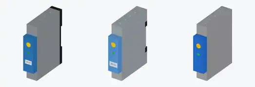

CEB / ENGINEERING
Инженерный комплекс
100 заданий для оценки практической инженерной работы моделей.
Результаты контрольных прогонов
Контрольные прогоны GLM / GPT-6 / GPT-6.2 — 25.11.2026 · диагностическая ведомость: время, совпадение контрольных полей, реальные артефакты и несоответствия. Полный рейтинг не утверждён.
Запуск испытания
Один проверенный архив со всеми входами и резервные каналы. Копируемый промпт содержит условия всех 100 заданий, из них 63 самостоятельные; также включён измеритель времени, контрольные точки и проверка ZIP. Вложение ZIP предпочтительно для полного зачёта.
Полный промпт: условия 100 заданий и измеритель времени
Все инженерные задания
| № / Задание | Направление |
|---|
Результаты моделей
Опубликованные оценки относятся к имеющимся протоколам с собственным набором входов. Баллы не переносятся на текущий пилотный каталог. Режим рассуждения прошлых прогонов не зафиксирован. 100% по сопоставимым заданиям не означает решение всех 100.
Загрузить отчёт модели
Импорт выполняется локально в браузере. Отчёт не отправляется на сервер и не получает автоматически баллы.
Сравнение по отдельному заданию
Геометрия и артефакты


Причины несоответствий
Диагностика опирается на фактические отчёты: отдельно ошибки модели, ограничения среды, отсутствующие исходные данные и неоднозначные условия. Самоотчёт не заменяет независимой проверки.